Final Project
the 3-RRR CPM ruling a coarse diffraction grating on an aluminum SEM target using a bit of CVD diamond:close-up view of above, featuring tiny chips:
automated fatigue testing machine cycling a flexure to failure:
catching a beam of sunlight from the E15 atrium skylight to test the grating on a condensate-covered iced coffee cup:
a side view SEM micrograph of the diffraction grating, in which it is good from far, but far from good: 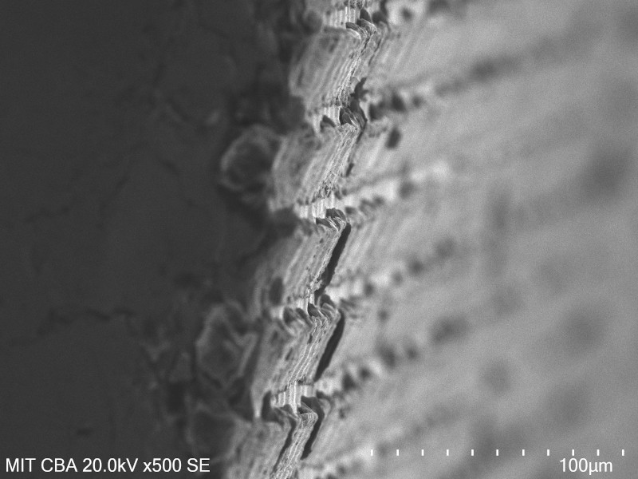
Introduction
In the past twenty or so years, public access to digital fabrication has dramatically improved. The FabLab movement, Maker Faire, and thousands of independent hacker spaces have conspired to introduce millions of people to CNC machining, 3D printing, and advanced circuiteering. Nowadays, most larger population centers host a handful of shops or clubs where one can pay a reasonable memebership fee to mill circuit boards, route wood furniture, and program microcontrollers. Even better, the machines that enable the personal fabrication revolution continue to drop in cost; for a few thousand dollars, one can now fill a room with enough equipment to take on most of the smaller projects previously relegated to ~$100k FabLabs. A great example of this trend is Clank, a small but eminently capable open-source CNC router designed by my colleague Jake Read to support remote PCB milling during the Covid-19 pandemic.Most machines destined for FabLabs are comfortable working in the millimeter range, with realistic accuracy down to the tens of microns. A full sized ShopBot, for example, has a working area of a few square meters and ~50 micron accuracy, while a Roland SRM-20 desktop mill is good down to a few microns. Homebuilt machines like Clank work in this range as well, and are more than accurate enough for tasks like milling PCBs or machining precise wax models for casting. Reducing uncertainty and resolvable length further, however, is elusive with existing motion systems; single-digit and sub-micron lengths approach and exceed the tolerance of bearings, linear rails, ball screws, and all of the milled or 3D printed parts that hold machines together.
This limitation is unfortunate, because reliably moving objects at smaller length scales is interesting and valuable. Below a micron, the physical principles that drive familiar phenomena start to shift. Color can be created with structure; electrostatic and surface tension forces become significant; fluids behave differently. Sub-micron positioning repeatability enables research into fields such as biology and optics. A desire to broaden access to such technology drove my initial interest in this project.
An important note is that none of this work would have been possible without unrestricted access to advanced digital fabrication and inspection equipment. The core technology described below leans heavily on wire-EDM and waterjet fabrication methods, along with high resolution laser and scanning electron microscope measurement systems. All of the physical components described here were designed, manufacured, assembled, and tested by the same person, usually in the same room, and surprisingly often on the same day.
Component: Modular Superelastic Flexures
Flexures, or compliant mechanisms, offer a fascinating alternative to constraining motion as compared to rolling or sliding elements. They possess both compelling advantages (no backlash, no lubrication, high stiffness) and stark disadvantages (fatigue life, dimensional constraints, fabrication challenges). Some tasks that are relatively simple with traditional elements, such as creating a linear axis, are challenging with flexures; conversely, flexures are great for scaling motion systems down to the sub-micron regime.The core component developed during this class is the modular superelastic flexure. This concept improves flexures in two ways: first, by using an unusual material (Nitinol) to increase the useful range of each joint; and second, by discretizing flexural systems into reversibly assemblable rigid and flexible elements.
twenty-four modular superelastic flexures, removed from the wire-EDM and marked with blue paint:

The modular superelastic flexure looks a bit like a bowtie. The dimensions of the center beam control the stiffness of the flexure, along with its fatigue life for a given angular displacement. The angled surfaces adjacent to the beam form a dovetail that mates with a matching cutout in a rigid structural element. The round half-circle is tapered to match a 48:1 7/0 taper pin, which is driven in after assembly to secure the joint.
an early drawing of a modular superelastic flexure; dimensions have changed somewhat since, but the concept remains:

flexural mechanisms can be assembled by tapping the pins home with a small hammer and a punch, but a better solution is a customized hand tool (in this case, commercial parallel jaw pliers with a wire-EDMed 17-4 lower jaw):
a whimsical extension enables recursion, by fabricating the assembly tool from modular flexural elements and rigid components:
Evaluation
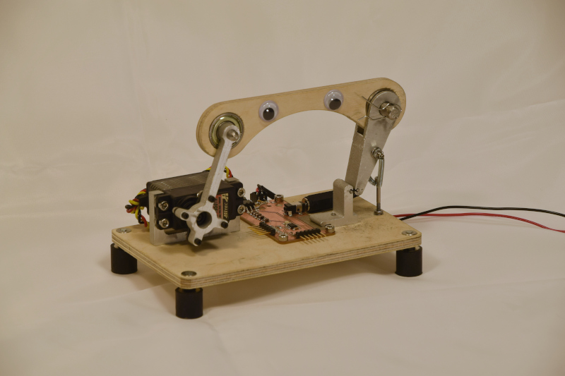A problem identified early (and then later and again later still) was cyclic fatigue breakage. I quantified fatigue performance by building a simple automated fatigue testing machine, which rapidly bends test elements back and forth until it detects an open circuit across the flexure and reports the cycle count via a serial port (see video at top of page, and image above; thanks to Jack for demanding the addition of googly eyes). Initially, I hoped to control fatigue by improving the surface finish of the flexures via increased wire-EDM passes; however, I didn't see a significant improvement in lifetime:
| value | one WEDM pass | two WEDM passes | three WEDM passes |
|---|---|---|---|
| average cycles to failure | 8223 | 9943 | 7881 |
| standard deviation | 2510 | 3357 | 796 |
| sample count | 7 | 5 | 4 |
Unchanged variables were material (Nitinol), beam dimension (1.5 mm x 0.3 mm), flexure thickness (10 mm), testing rate (3 Hz), and test angle (20 degrees). Notably, I did not have a chance to actually measure surface finish; I simply compared fatigue life to different fabrication machine settings. A deeper exploration would quantify finish in Ra, and perhaps explore alternative methods to improve this characteristic (such as electrochemical or mechanical polishing).
I did see a notable improvement in fatigue life when I simply increased the flexure's beam length and maintained the testing angle. I also did a "sanity check" with a single aluminum and 17-4 flexure, which showed an ~order of magnitude increase in fatigue life with superelastic materials:
| value | 1.5 mm beam, Nitinol | 3.0 mm beam, Nitinol | 3.0 mm beam, Al (6061?) | 3.0 mm beam, 17-4 |
|---|---|---|---|---|
| average cycles to failure | 8223 | 16343 | 1504 | 1970 |
| standard deviation | 2510 | 4579 | 0 | 0 |
| sample count | 7 | 5 | 1 | 1 |
In this experiment, unchanged variables were flexure thickness (10 mm), beam width (0.3 mm), testing rate (3 Hz), test angle (20 degrees), and WEDM passes (1 pass). I was glad to see the expected improvement in fatigue life as it relates to beam length; clearly, longer beams will reduce system stiffness, so digging further into this tradeoff is probably worthwhile. And I still want better fatigue life; my intuition is that Nitinol should be more than an order of magnitude better than aluminum or stainless steel.
I also evaluated flexure performance as a pin joint pivot in an actuated linkage. I was particularly interested in how close the joints came to emulating rotary joints, knowing that this flexure geometry doesn't do a great job maintaining an instantaneous center of rotation. I also wanted to look for any evidence of backlash. You can read more about the testing setup here; briefly, I used a laser displacement sensor and a few bits of waterjetted aluminum to drive the linkage with a timing belt, and measured the output with a laser displacement sensor.
The resulting deviation from a fitted line suggested the joints emulated pivots well enough for single micron repeatability at a 5:1 drive ratio. Better, I didn't see any evidence of backlash when I cycled the actuator back-and-forth repeatedly. It's likely that any inaccuracy here is due to manufacturing tolerance of the stepper motors themselves, which could be improved by closing the actuator loop with an encoder (which Jake helpfully provided but I never got around to implementing).
displacement change per stepper pulse, as measured via laser displacement sensor: 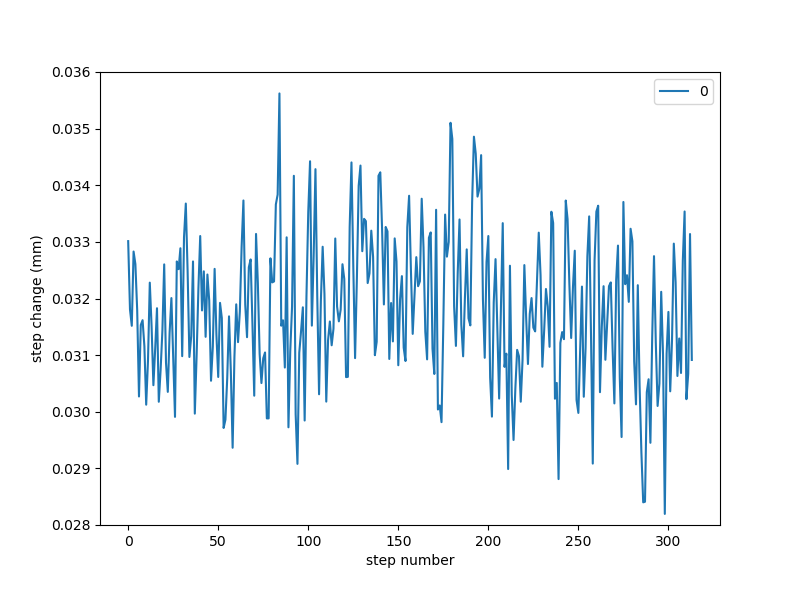
histogram of values showing reasonable normalcy, so we can believe the ~1.3 um standard deviation: 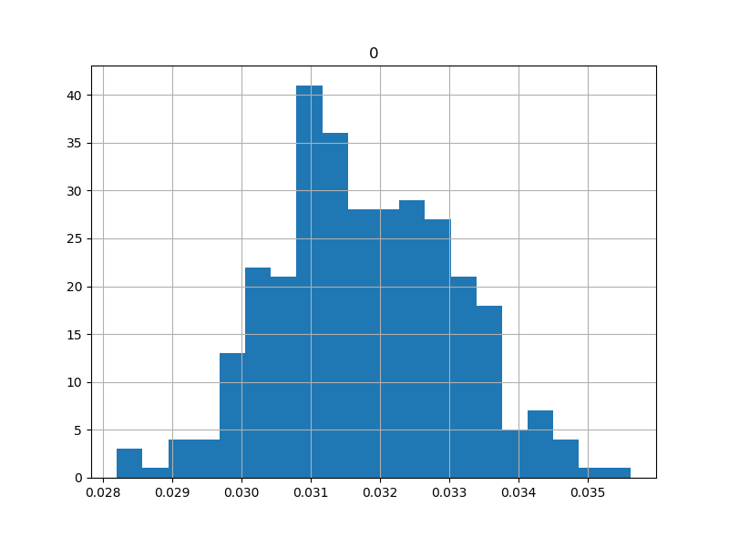
back-and-forth plot at 5-step increments, showing zero measured backlash (but much ringing): 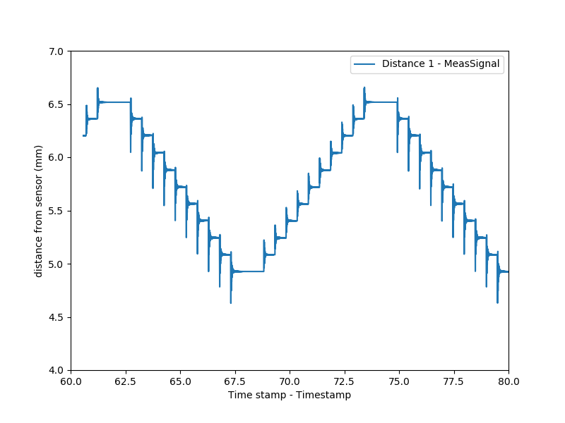
Licensing, etc
I continue to stand by the blurb on the main page of this project:This work may be reproduced, modified, distributed, performed, and displayed for any purpose, but must acknowledge the orginal project. Copyright is retained and must be preserved. The work is provided as is; no warranty is provided, and users accept all liability.Having said that, prior to publicizing this site I did receive a provisional patent for modular superelastic flexures, and I intend to see that through to full protection in the interest of preserving the aformentioned blurb. I want modular superelastic flexures to be another tool fabricators around the world can use in their projects when they need precise motion constraint systems.
System: 3RRR CPM
To demonstrate modular superelastic flexures in a practical application, I twice duplicated the parts I fabricated for the actuator test and used them to construct a 3-actuator compliant parallel manipulator. The system uses three NEMA14 stepper motors equipped with Clank LZ controllers, which are networked together using Jake's Open Systems Assembly Protocol and controlled using a Raspberry Pi and the stock Clank controller code. The system also includes a high-resolution computer vision system for calibrating the stage motion, which uses ArUco markers and OpenCV along with a Raspberry Pi High Quality Camera and a 50 mm zoom lens.3-RRR CPM overview, as installed on the optical table in E15-023:

detail of the 3-linkage mechanism, stepper motor actuators, removable kinematic stage, and grating tool:

Without motors (but with limit stops), one can fling the stage about to demonstrate the linkage kinematics and stiffness:
The vision system was designed, installed, un-distorted, and calibrated using a precision laser-machined ArUco target; however, the system was never used for its intended purpose, which was to quantify and remove the last bits of distortion present after the inverse kinematics of the system were taken into account.
ArUco marker installed below camera on commercial micro-stage with laser displacement sensor: 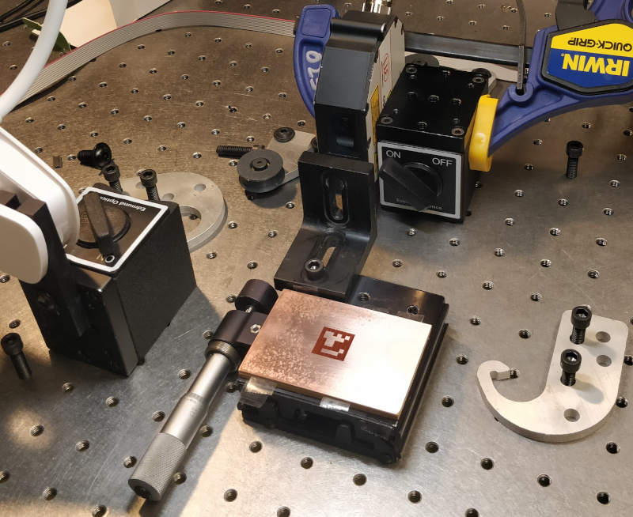
running the stage through its paces, as seen by the RPi HQ Cam:
The resulting data showed the computer system to be accurate to 10 um or better across its working area, which would have been sufficient to quantify and correct distortion. Instead, in the interest of time and results, I spent the last bit of the project ruling test gratings. I started with a sharpened carbide insert and eventually switched to a scrap of CVD diamond as a tool, and wrote a simple Python script to generate a suitable tool path. Results weren't particularly impressive and couldn't be thoroughly evaluated, as I burnt out the SEM filament days before the final while working on an unrelated project (and didn't want to bug Camron to replace it, since she has her own MAS.865 final to think about). But in the end, I was able to scribe a coarse diffraction grating that split white light into its component wavelengths; well short of my ambitious sodium doublet visualization, but notable nonetheless.
several attemtps at ruling a diffraction grating onto a 1/2" aluminum SEM target: 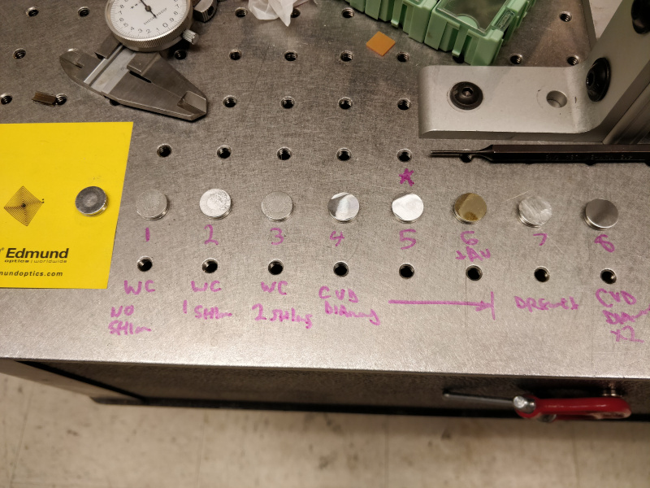
grating tool, initially a simple carbide insert holder, now holding a tiny CVD diamond scrap: 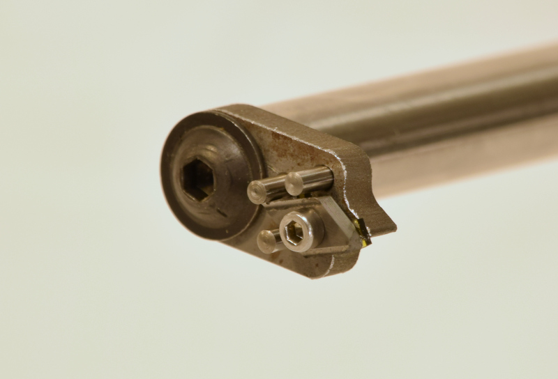
grating number 5, with 65 um line spacing, produced the best rainbow:
viewed head-on under good conditions, the grating produces various colors depending on angle: 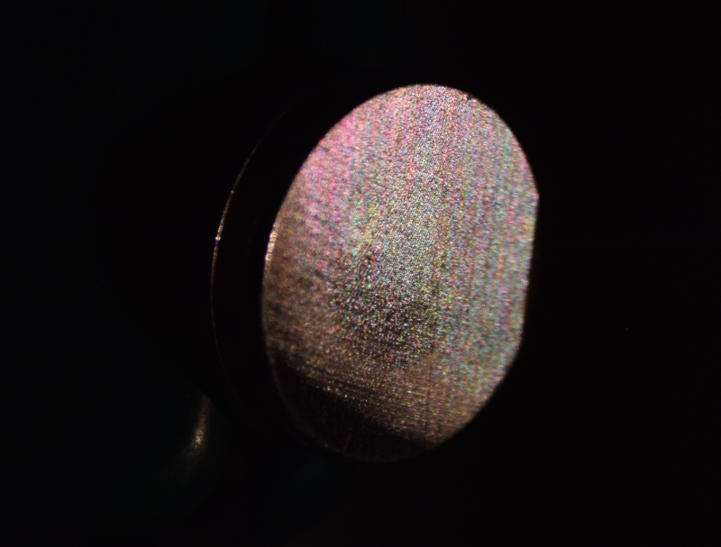
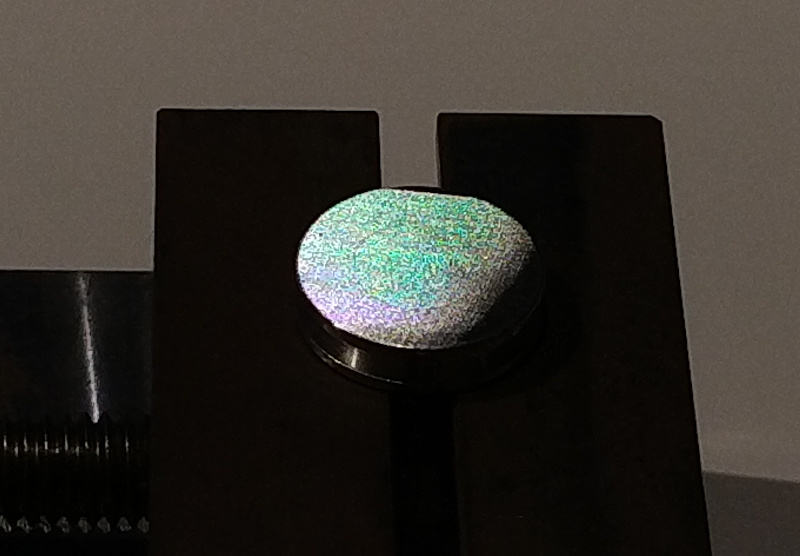
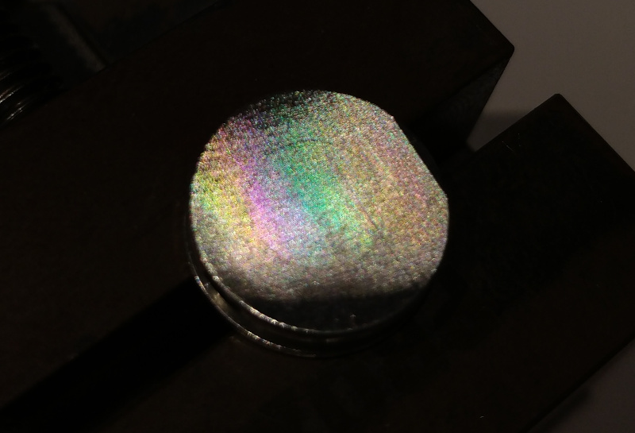
SEM micrographs of the diffraction grating; note surface roughness caused by poor tool quality and suboptimal feeds/speeds, along with waviness from stepper steps at the limit of machine resolution: 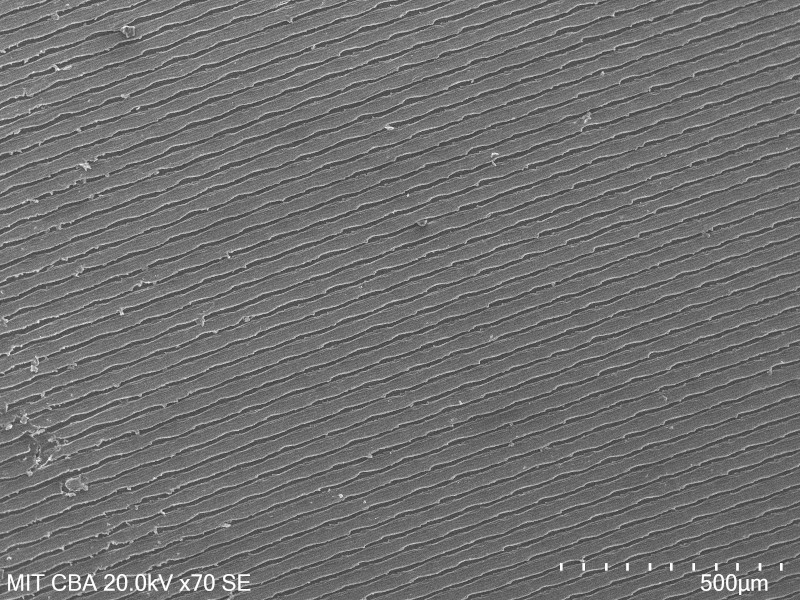
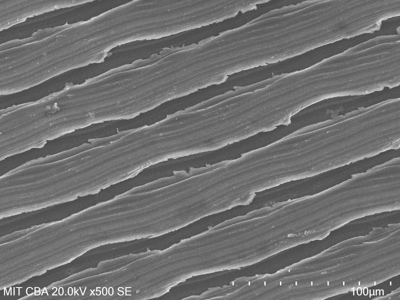
Evaluation
In addition to the "existence proof" of the technically-functional diffraction grating, I evaluated the 3-RRR CPM for stiffness in a few axes. You can read more about this work here; briefly, I locked the motors and used a load cell mounted to a commercial micrometer stage to apply known force in a few directions, and used the laser displacement sensor to measure the stage's response. The resulting system proved itself to be both impressively stiff (more than 100 N/mm) and linear down to the resolution of the measurement tools.stiffness measurement setup, showing the load cell, micrometer stage, and laser displacement sensor: 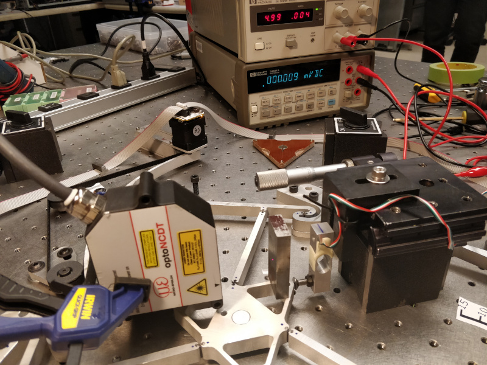
stiffness measurement axes: 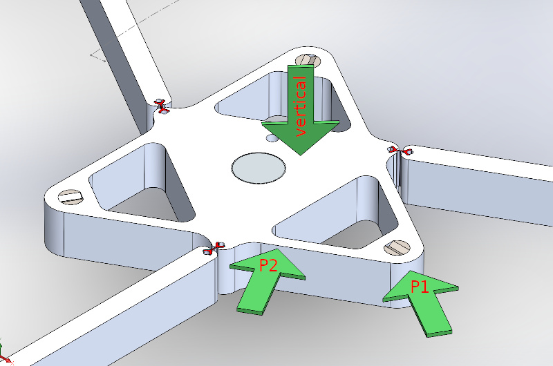
P2 test graph, showing linear response and 237 N/mm machine stiffness: 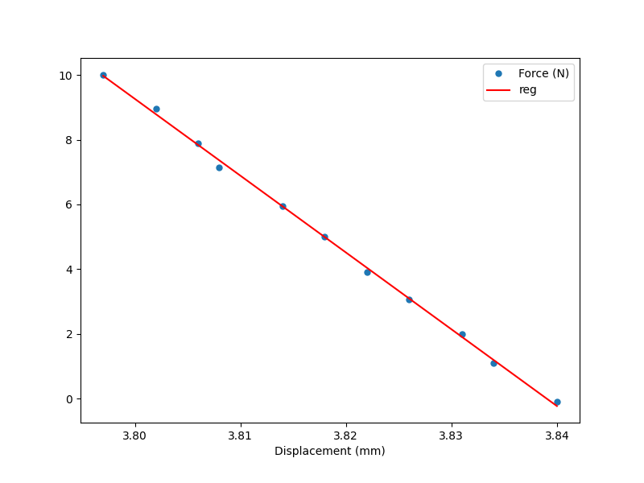